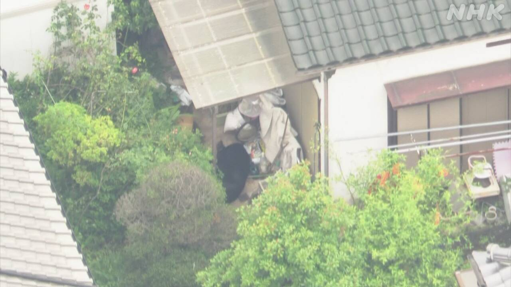
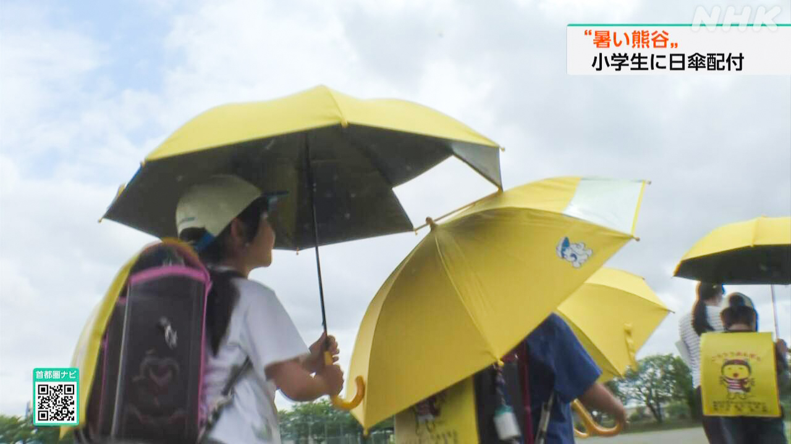

最新ニュース
1️⃣ フィリピンの地震で37人が亡くなった 助ける活動が続く
8日にフィリピンの近くで起こった大きい地震のニュースです。
強く揺れたミンダナオ島では、店などの建物がたくさん壊れています。
フィリピン政府は、今までに37人が亡くなって400人以上がけがをしたと言っています。
赤十字はけがをした人の手当てを始めました。軍などは壊れた建物から人を助ける活動を続けています。
新聞やテレビによると、空港や大学でも壊れたところがありました。電気や通信を使うことができなくなっているところもあります。
フィリピンの地震の研究所は、まだ地震が続く心配があるため気をつけるように言っています。
2️⃣ 栃木県宇都宮市 まちの中で熊を捕まえた

栃木県宇都宮市のまちの中にいた熊のニュースです。9日、1頭の熊を捕まえました。
宇都宮市では、今月6日から人が集まる所や家のまわりで、たくさんの人が熊を見ました。
熊は体の大きさが1mぐらいありました。9日も、朝から多くの人が熊を見ました。
このため宇都宮市などがさがしていました。午後になって、まちの中にある家の庭で1頭の熊を見つけました。
そして銃で眠くなる薬を撃って捕まえました。市はまちの中で多くの人が見た熊だと考えています。
近くに住む人は「捕まって安心しました」と話しています。
3️⃣ 埼玉県熊谷市 熱中症から守るため小学生に「日傘」を渡した

埼玉県熊谷市は、夏にとても暑くなることで有名なまちです。
熊谷市はこどもたちが熱中症にならないように「日傘」を使うことを考えました。
日傘は太陽の熱が体に当たらないようにする傘です。
8日から、小学校1年生と2年生など2300人ぐらいに「日傘」を渡しています。
傘の色は黄色です。車を運転している人からよく見えるようにしています。雨の時も使うことができます。
傘をもらった子どもたちは「熱中症に負けないで勉強も頑張ります」と話していました。
学校の先生は「熱中症のことをしっかり考える子どもになってほしい」と話しています。
4️⃣ サッカーワールドカップ 日本の選手たちがアメリカで練習
今月11日に始まるサッカーのワールドカップのニュースです。
日本の選手たちは8日、アメリカの南のほうにあるナッシュビルというまちに来ました。しばらくの間、このまちで練習をします。
初めての練習には、5000人以上のファンが集まりました。キャプテンの遠藤航選手が、日本のサッカーの新しい歴史を作ることができるように頑張りたいとあいさつしました。アメリカの高校生は「遠藤選手が大好きです。サインをもらうことができて嬉しいです」と話しました。
選手たちはダラスへ行って、14日、日本の時間の15日の朝、オランダと最初の試合をします。
- 〜ている / 〜でいる
- 〜など
- 〜まで
- 〜以上
- 〜までに
- 〜から
- 〜ところ
- 〜によると
- 〜がある / 〜がいる
- 〜ても / 〜でも
- 〜こと
- 〜ことができる
- 〜ため
- 〜ように
- 〜中
- 〜くらい / 〜ぐらい
- 〜になる
- 〜ならない
- 〜ようにする
- 〜ないで
- 〜方
- 〜という
vebaev.github.io
Generated: 2026-06-09 12:39:13 UTC